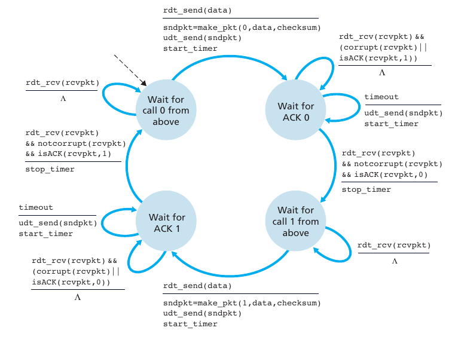

1. Finite Slate Machines
Finite Slate Machines (FSM) adalah sebuah metodologi perancangan sistem kontrol yang menggambarkan tingkah laku atau prinsip kerja sistem dengan menggunakan tiga hal berikut: State (Keadaan), Event (kejadian) dan Action (aksi). Pada satu saat dalam periode waktu yang cukup signifikan, sistem akan berada pada salah satu state yang aktif. Sistem dapat beralih atau bertransisi menuju state lain jika mendapatkan masukan atau event tertentu, baik yang berasal dari perangkat luar atau komponen dalam sistemnya itu sendiri (misal interupsi timer).
2. Model FSM Dari Sisi Pengirim
Gambar di atas merupakan diagram Finite Slate Machine Protokol rdt 3.0
-
Wait For Call 0 from Above
State pertama adalah Wait For Call 0 from Above dimana pada state ini terdapat sebuah event bernama (rdt_send data) yang memiliki 3 action:
- sndpkt=make_pkt(0, data, checksum): aksi ini bertujuan untuk membuat paket yang berisi data sequence 0, data, dan checksum
- udt_send(sndpkt): aksi ini ber
- start timer: memulai waktu hitung mundur (countdown)
-
Wait for ACK 0
State kedua adalah Wait for ACK 0 dimana state ini terdapat 3 event:
- rdt_rcv(rcvpkt) && (corrupt(rcvpkt)) || isACK(rcvpkt,1)): event ini akan mengecek apakah paket yang diterima mengalami corrupt atau ACK yang diterima adalah 1.
- Timeout: didalam event ini terdapat 2 aksi, yaitu mengirim ulang paket (udt_send(pkt)) dan memulai waktu countdown (start_timer). Event ini akan berjalan waktu countdown yang diberikan telah habis
- rdt_rcv(rcvpkt) && notcorrupt(rcvpkt) && isACK(rcvpkt,0): event ini menerima paket yang tidak corrupt dan ACK yang diterima adalah 0. Aksi yang ada di event ini yaitu stop_timer yang berarti menghentikan countdown
-
wait for call 1 from above
State ketiga adalah wait for call 1 from above dimana state ini memiliki 2 event yaitu:
- rdt_rcv(rcvpkt): event ini hanya menerima paket dan tidak melakukan aksi apapun
- rdt_send(data): pada event ini terdapat tiga aksi, yaitu:
- sndpkt=make_pkt(1,data,checksum): pada action ini paket berisi sequence 1, data, checksum
- udt_send(sndpkt) yang berarti paket yang terlah diterima akan dikirim lagi
- start_time: action ini akan memulai waktu countdown
-
wait for ACK 1
State keempat adalah wait for ACK 1 dimana state ini memiliki 3 event yang mirip dengan state wait for ACK 0 namun yang membedakan adalah informasi yang dikirim adalah sequence 1